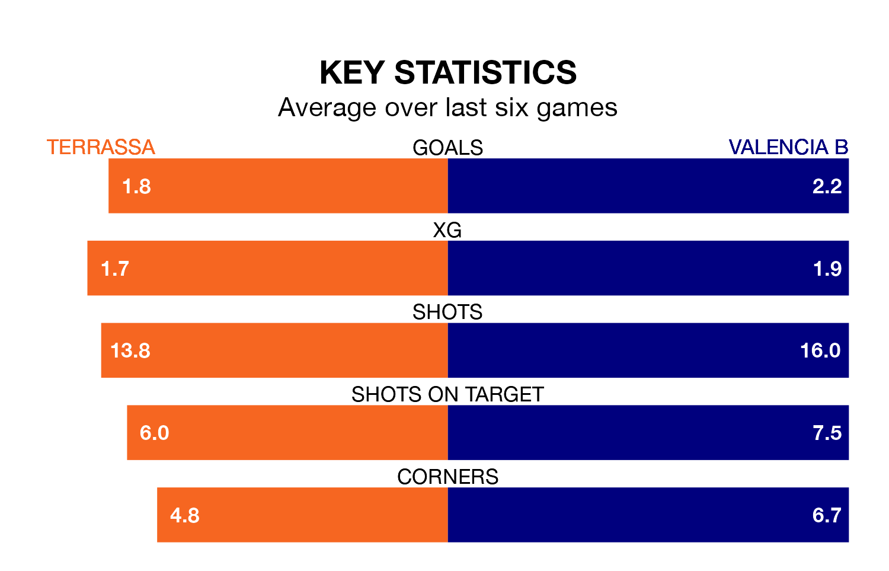

Valencia B visit Terrassa on Sunday on the back of three consecutive wins in the Segunda División RFEF Group 3.
Valencia B have picked up 10 points from their last six games, and they face a Terrassa side who also won their last match, and have collected 13 points from the last possible 18.
With 42 goals in 28 games so far this season, Valencia B are the league's third-highest scorers with 1.5 goals per game. And they are conceding fewer than average, letting in 31 goals at a rate of 1.1 per game.
Terrassa are also above average scorers, with 1.3 goals per game, compared to a league average of 1.2. They have conceded 1.2 goals per game.
The away side are seventh in the table after 28 games, of which they have won 11 and drawn seven, earning 40 points.
The hosts are one place behind Valencia B in eighth, with 10 wins and 10 draws putting them on the same number of points.
In the last three years, Terrassa and Valencia B have played each other on three occasions. Terrassa won one of them and they drew the other.
Their last meeting was on November 26, when Terrassa won 1-0 away.
Terrassa's last match was on Sunday, a 3-1 win against La Nucía, with Aythami Perera García, Pau Salvans Guimerà and Sergio Buenacasa Alba getting the goals for Terrassa.
Valencia B beat SD Formentera 4-2 last time out, also on March 31, with Pablo Gozálbez (three) and Borja Calvo Montón on the scoresheet.
Updated: 16:41 (UTC), 04/04/24